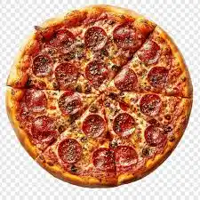

Pasta
Pasta is a versatile, beloved staple food originating from Italy, typically made from an unleavened dough of wheat flour, water, or eggs. With over 400 shapes—including long noodles, tubes, and special shapes like fusilli—it serves as a popular carbohydrate-rich dish worldwide. It is commonly cooked by boiling and often served with sauces.
Food
Food is any substance consumed to provide nutritional support for an organism. Food is usally of plant, animal, or fungal orgin, and contains essential nutrients, such as carbohydrates, fats, protein, vitamins, or minerals.
>
Image Two Text
Pizza
 Pasta is a versatile, beloved staple food originating from Italy, typically made from an unleavened dough of wheat flour, water, or eggs. With over 400 shapes—including long noodles, tubes, and special shapes like fusilli—it serves as a popular carbohydrate-rich dish worldwide. It is commonly cooked by boiling and often served with sauces.
Pasta is a versatile, beloved staple food originating from Italy, typically made from an unleavened dough of wheat flour, water, or eggs. With over 400 shapes—including long noodles, tubes, and special shapes like fusilli—it serves as a popular carbohydrate-rich dish worldwide. It is commonly cooked by boiling and often served with sauces.

Pasta is a versatile, beloved staple food originating from Italy, typically made from an unleavened dough of wheat flour, water, or eggs. With over 400 shapes—including long noodles, tubes, and special shapes like fusilli—it serves as a popular carbohydrate-rich dish worldwide. It is commonly cooked by boiling and often served with sauces.
All @copy rights reserved by Swati Singh
Food